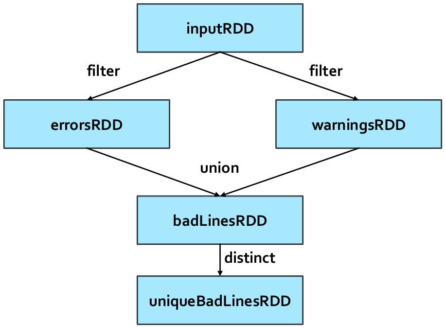
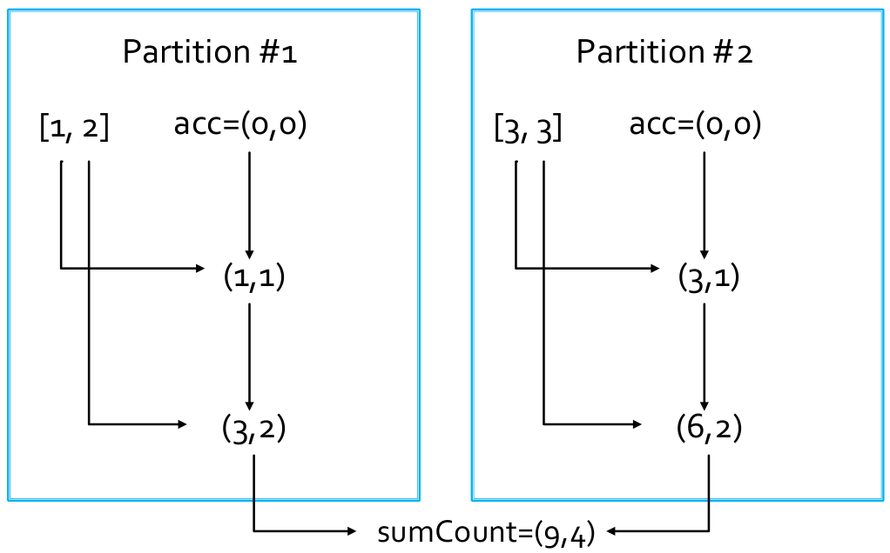

13 RDD based programming
Spark Context
The “connection” of the driver to the cluster is based on the Spark Context object
- In Python the name of the class is
SparkContext - The Spark Context is built by means of the constructor of the
SparkContextclass - The only parameter is a configuration object
The Spark Context object can be obtained also by using the SparkContext.getOrCreate(conf) method, whose only parameter is a configuration object. Notice that, if the SparkContext object already exists for this application, the current SparkContext object is returned, otherwise, a new SparkContext object is returned: there is always one single SparkContext object for each application.
RDD basics
A Spark RDD is an immutable distributed collection of objects. Each RDD is split in partitions, allowing to parallelize the code based on RDDs (i.e., code is executed on each partition in isolation).
RDDs can contain any type of Scala, Java, and Python objects, including user-defined classes.
RDD: create and save
RDDs can be created
- By loading an external dataset (e.g., the content of a folder, a single file, a database table)
- By parallelizing a local collection of objects created in the Driver (e.g., a Java collection)
Create RDDs from files
To built an RDD from an input textual file, use the textFile(name) method of the SparkContext class.
- The returned RDD is an RDD of Strings associated with the content of the name textual file;
- Each line of the input file is associated with an object (a string) of the instantiated RDD;
- By default, if the input file is an HDFS file the number of partitions of the created RDD is equal to the number of HDFS blocks used to store the file, in order to support data locality.
## Build an RDD of strings from the input textual file
## myfile.txt
## Each element of the RDD is a line of the input file
inputFile = "myfile.txt"
lines = sc.textFile(inputFile)Notice that no computation occurs when sc.textFile() is invoked: Spark only records how to create the RDD, and the data is lazily read from the input file only when the data is needed (i.e., when an action is applied on lines, or on one of its “descendant” RDDs).
To build an RDD from a folder containing textual files, use the textFile(name) method of the SparkContext class.
- If name is the path of a folder all files inside that folder are considered;
- The returned RDD contains one string for each line of the files contained on the name folder.
## Build an RDD of strings from all the files stored in
## myfolder
## Each element of the RDD is a line of the input files
inputFolder = "myfolder/"
lines = sc.textFile(inputFolder)Notice that all files inside myfolder are considered, also those without suffix or with a suffix different from “.txt”.
To set the (minimum) number of partitions, use the textFile(name, minPartitions) method of the SparkContext class.
- This option can be used to increase the parallelization of the submitted application;
- For the HDFS files, the number of partitions
minPartitionsmust be greater than the number of blocks/chunks.
Create RDDs from a local Python collection
An RDD can be built from a local Python collection/list of local python objects using the parallelize(c) method of the SparkContext class
- The created RDD is an RDD of objects of the same type of objects of the input python collection
c - In the created RDD, there is one object for each element of the input collection
- Spark tries to set the number of partitions automatically based on your cluster’s characteristics
## Create a local python list
inputList = [
'First element',
'Second element',
'Third element'
]
## Build an RDD of Strings from the local list.
## The number of partitions is set automatically by Spark
## There is one element of the RDD for each element
## of the local list
distRDDList = sc.parallelize(inputList)Notice that no computation occurs when sc.parallelize(c) is invoked: Spark only records how to create the RDD, and the data is lazily read from the input file only when the data is needed (i.e., when an action is applied on distRDDlist, or on one of its “descendant” RDDs).
When the parallelize(c) is invoked, Spark tries to set the number of partitions automatically based on the cluster’s characteristics, but the developer can set the number of partition by using the method parallelize(c, numSlices) of the SparkContext class.
## Create a local python list
inputList = [
'First element',
'Second element',
'Third element'
]
## Build an RDD of Strings from the local list.
## The number of partitions is set to 3
## There is one element of the RDD for each element
## of the local list
distRDDList = sc.parallelize(inputList, 3)Save RDDs
An RDD can be easily stored in textual (HDFS) files using the saveAsTextFile(path) method of the RDD class
pathis the path of a folder- The method is invoked on the RDD to store in the output folder
- Each object of the RDD on which the
saveAsTextFilemethod is invoked is stored in one line of the output files stored in the output folder, and there is one output file for each partition of the input RDD.
## Store the content of linesRDD in the output folder
## Each element of the RDD is stored in one line
## of the textual files of the output folder
outputPath="risFolder/"
linesRDD.saveAsTextFile(outputPath)Notice that saveAsTextFile() is an action, hence Spark computes the content associated with linesRDD when saveAsTextFile() is invoked. Spark computes the content of an RDD only when that content is needed.
Moreover, notice that the output folder contains one textual file for each partition of linesRDD, such that each output file contains the elements of one partition.
Retrieve the content of RDDs and store it local Python variables
The content of an RDD can be retrieved from the nodes of the cluster and stored in a local python variable of the Driver using the collect() method of the RDD class.
The collect() method of the RDD class is invoked on the RDD to retrieve. It returns a local python list of objects containing the same objects of the considered RDD.
Pay attention to the size of the RDD: large RDDs cannot be stored in a local variable of the Driver.
## Retrieve the content of the linesRDD and store it
## in a local python list
## The local python list contains a copy of each
## element of linesRDD
contentOfLines=linesRDD.collect()contentOfLines |
Local python variable: it is allocated in the main memory of the Driver process/task |
linesRDD |
RDD of strings: it is distributed across the nodes of the cluster |
Transformations and Actions
RDD support two types of operations
- Transformations
- Actions
Transformations
Transformations are operations on RDDs that return a new RDD. This type of operation apply a transformation on the elements of the input RDD(s) and the result of the transformation is stored in/associated with a new RDD.
Remember that RDDs are immutable, hence the content of an already existing RDD cannot be changed, and it only possible to applied a transformation on the content of an RDD and then store/assign the result in/to a new RDD.
Transformations are computed lazily, which means that transformations are computed (executed) only when an action is applied on the RDDs generated by the transformation operations. When a transformation is invoked, Spark keeps only track of the dependency between the input RDD and the new RDD returned by the transformation, and the content of the new RDD is not computed.
The graph of dependencies between RDDs represents the information about which RDDs are used to create a new RDD. This is called lineage graph, and it is represented as a DAG (Directed Acyclic Graph): it is needed to compute the content of an RDD the first time an action is invoked on it, or to compute again the content of an RDD (or some of its partitions) when failures occur.
The lineage graph is also useful for optimization purposes: when the content of an RDD is needed, Spark can consider the chain of transformations that are applied to compute the content of the needed RDD and potentially decide how to execute the chain of transformations. In this way, Spark can potentially change the order of some transformations or merge some of them based on its optimization engine.
Actions
Actions are operations that
- return results to the Driver program (i.e., return local python variables). Pay attention to the size of the returned results because they must be stored in the main memory of the Driver program.
- write the result in the storage (output file/folder). The size of the result can be large in this case since it is directly stored in the (distributed) file system.
Example of lineage graph (DAG)
Consider the following code
from pyspark import SparkConf, SparkContext
import sys
if __name__ == "__main__":
conf = SparkConf().setAppName("Spark Application")
sc = SparkContext(conf=conf)
## Read the content of a log file
inputRDD = sc.textFile("log.txt")
## Select the rows containing the word "error"
errorsRDD = inputRDD.filter(lambda line: line.find('error')>=0)
## Select the rows containing the word "warning"
warningRDD = inputRDD.filter(lambda line: line.find('warning')>=0)
## Union of errorsRDD and warningRDD
## The result is associated with a new RDD: badLinesRDD
badLinesRDD = errorsRDD.union(warningRDD)
## Remove duplicates lines (i.e., those lines containing
## both "error" and "warning")
uniqueBadLinesRDD = badLinesRDD.distinct()
## Count the number of bad lines by applying
## the count() action
numBadLines = uniqueBadLinesRDD.count()
## Print the result on the standard output of the driver
print("Lines with problems:", numBadLines)
Notice that:
- The application reads the input log file only when the
count()action is invoked: this is the first action of the program; filter(),union(), anddistinct()are transformations, so they are computed lazily;- Also
textFile()is computed lazily, however it is not a transformation because it is not applied on an RDD.
Spark, similarly to an SQL optimizer, can potentially optimize the execution of some transformations; for instance, in this case the two filters + union + distinct can be potentially optimized and transformed in one single filter applying the constraint (i.e. The element contains the string “error” or “warning”). This optimization improves the efficiency of the application, but Spark can performs this kind of optimizations only on particular types of RDDs: Datasets and DataFrames.
Passing functions to Transformations and Actions
Many transformations (and some actions) are based on user provided functions that specify which transformation function must be applied on the elements of the input RDD. For example, the filter() transformation selects the elements of an RDD satisfying a user specified constraint, which is a Boolean function applied on each element of the input RDD.
Each language has its own solution to pass functions to Spark’s transformations and actions. In Python, it is possible to use
- Lambda functions/expressions: simple functions that can be written as one single expression
- Local user defined functions (local defs): used for multi-statement functions or statements that do not return a value
Example based on the filter transformation
- Create an RDD from a log file;
- Create a new RDD containing only the lines of the log file containing the word “error”. The
filter()transformation applies the filter constraint on each element of the input RDD; the filter constraint is specified by means of a Boolean function that returns true for the elements satisfying the constraint and false for the others.
Solution based on lambda expressions (lambda)
## Read the content of a log file
inputRDD = sc.textFile("log.txt")
## Select the rows containing the word "error"
errorsRDD = inputRDD.filter(lambda l: l.find('error')>=0)lambda l: l.find('error')>=0 |
This part of the code, which is based on a lambda expression, defines on the fly the function to apply. This part of the code is applied on each object of inputRDD: if it returns true then the current object is “stored” in the new errorsRDD RDD, otherwise the input object is discarded. |
Solution based on function (def)
## Define the content of the Boolean function that is applied
## to select the elements of interest
def myFunction(l):
if l.find('error')>=0: return True
else: return False
## Read the content of a log file
inputRDD = sc.textFile("log.txt")
## Select the rows containing the word “error”
errorsRDD = inputRDD.filter(myFunction)def myFunction(l): |
When it is invoked, this function analyses the value of the parameter line and returns True if the string line contains the substring “error”. Otherwise, it returns False. |
.filter(myFunction) |
For each object o in inputRDD, the myFunction function is automatically invoked. If myFunction returns True, then o is stored in the new RDD errorsRDD. Otherwise, o is discarded. |
Solution based on function (def)
## Define the content of the Boolean function that is applied
## to select the elements of interest
def myFunction(l):
return l.find('error')>=0
## Read the content of a log file
inputRDD = sc.textFile("log.txt")
## Select the rows containing the word “error”
errorsRDD = inputRDD.filter(myFunction)return l.find('error')>=0 |
This part of the code is the same used in the lambda-based solution. |
.filter(myFunction) |
For each object o in inputRDD, the myFunction function is automatically invoked. If myFunction returns True, then o is stored in the new RDD errorsRDD. Otherwise, o is discarded. |
Solution comparison
The two solutions are more or less equivalent in terms of efficiency
Lambda function-based code (lambda) |
Local user defined functions (local def) |
|---|---|
| More concise | Less concise |
| More readable | Less readable |
| Multi-statement functions or statements that do not return a value are not supported | Multi-statement functions or statements that do not return a value are supported |
| Code cannot be reused | Code can be reused (some functions are used in several applications) |
Basic Transformations
- Some basic transformations analyze the content of one single RDD and return a new RDD (e.g.,
filter(),map(),flatMap(),distinct(),sample()) - Some other transformations analyze the content of two (input) RDDs and return a new RDD (e.g.,
union(),intersection(),substract(),cartesian())
Single input RDD transformations
Filter transformation
The filter transformation is applied on one single RDD and returns a new RDD containing only the elements of the input RDD that satisfy a user specified condition.
The filter transformation is based on the filter(f) method of the RDD class: a function f returning a Boolean value is passed to the filter method, where f contains the code associated with the condition that we want to apply on each element e of the input RDD. If the condition is satisfied then the call method returns true and the input element e is selected, otherwise, it returns false and the e element is discarded.
- Create an RDD from a log file;
- Create a new RDD containing only the lines of the log file containing the word “error”.
## Read the content of a log file
inputRDD = sc.textFile("log.txt")
## Select the rows containing the word “error”
errorsRDD = inputRDD.filter(lambda e: e.find('error')>=0)Notice that, in this case, the input RDD contains strings, hence, the implemented lambda function is applied on one string at a time and returns a Boolean value.
- Create an RDD of integers containing the values
[1, 2, 3, 3]; - Create a new RDD containing only the values greater than
2.
Using lambda
## Create an RDD of integers. Load the values 1, 2, 3, 3 in this RDD
inputList = [1, 2, 3, 3]
inputRDD = sc.parallelize(inputList)
## Select the values greater than 2
greaterRDD = inputRDD.filter(lambda num : num>2)Notice that the input RDD contains integers, hence, the implemented lambda function is applied on one integer at a time and returns a Boolean value.
Using def
## Define the function to be applied in the filter transformation
def greaterThan2(num):
return num>2
## Create an RDD of integers. Load the values 1, 2, 3, 3 in this RDD
inputList = [1, 2, 3, 3]
inputRDD = sc.parallelize(inputList)
## Select the values greater than 2
greaterRDD = inputRDD.filter(greaterThan2)In this case, the function to apply is defined using def and then is passed to the filter transformation.
Map transformation
The map transformation is used to create a new RDD by applying a function f on each element of the input RDD: the new RDD contains exactly one element y for each element x of the input RDD, in particular the value of y is obtained by applying a user defined function f on x (e.g., y= f(x)). The data type of y can be different from the data type of x.
The map transformation is based on the RDD map(f) method of the RDD class: a function f implementing the transformation is passed to the map method, where f contains the code that is applied over each element of the input RDD to create the elements of the returned RDD. For each input element of the input RDD exactly one single new element is returned by f.
- Create an RDD from a textual file containing the surnames of a list of users (each line of the file contains one surname);
- Create a new RDD containing the length of each surname.
## Read the content of the input textual file
inputRDD = sc.textFile("usernames.txt")
## Compute the lengths of the input surnames
lenghtsRDD = inputRDD.map(lambda line: len(line))Notice that the input RDD is an RDD of strings, hence, also the input of the lambda function is a String. Instead, the new RDD is an RDD of Integers, since the lambda function returns a new Integer for each input element.
- Create an RDD of integers containing the values
[1, 2, 3, 3]; - Create a new RDD containing the square of each input element.
FlatMap transformation
The flatMap transformation is used to create a new RDD by applying a function f on each element of the input RDD. The new RDD contains a list of elements obtained by applying f on each element x of the input RDD; in other words, the function f applied on an element x of the input RDD returns a list of values [y] (e.g., [y]= f(x)). [y] can be the empty list.
The final result is the concatenation of the list of values obtained by applying f over all the elements of the input RDD (i.e., the final RDD contains the concatenation of the lists obtained by applying f over all the elements of the input RDD).
Notice that
- duplicates are not removed
- the data type of
ycan be different from the data type ofx
The flatMap transformation is based on the flatMap(f) method of the RDD class A function f implementing the transformation is passed to the flatMap method, where f contains the code that is applied on each element of the input RDD and returns a list of elements which will be included in the new returned RDD: for each element of the input RDD a list of new elements is returned by f. The returned list can be empty.
- Create an RDD from a textual file containing a generic text (each line of the input file can contain many words);
- Create a new RDD containing the list of words, with repetitions, occurring in the input textual document. In other words, each element of the returned RDD is one of the words occurring in the input textual file, and the words occurring multiple times in the input file appear multiple times, as distinct elements, also in the returned RDD.
## Read the content of the input textual file
inputRDD = sc.textFile("document.txt")
## Compute/identify the list of words occurring in document.txt
listOfWordsRDD = inputRDD.flatMap(lambda l: l.split(' '))In this case the lambda function returns a “list” of values for each input element. However, notice that the new RDD (i.e., listOfWordsRDD) contains the “concatenation” of the lists obtained by applying the lambda function over all the elements of inputRDD: the new RDD is an RDD of strings and not an RDD of lists of strings.
Distinct information
The distinct transformation is applied on one single RDD and returns a new RDD containing the list of distinct elements (values) of the input RDD.
The distinct transformation is based on the distinct() method of the RDD class, and no functions are needed in this case.
A shuffle operation is executed for computing the result of the distinct transformation, so that data from different input partitions gets be compared to remove duplicates. The shuffle operation is used to repartition the input data: all the repetitions of the same input element are associated with the same output partition (in which one single copy of the element is stored), and a hash function assigns each input element to one of the new partitions.
- Create an RDD from a textual file containing the names of a list of users (each line of the input file contains one name);
- Create a new RDD containing the list of distinct names occurring in the input file. The type of the new RDD is the same of the input RDD.
- Create an RDD of integers containing the values
[1, 2, 3, 3]; - Create a new RDD containing only the distinct values appearing in the input RDD.
SortBy transformation
The sortBy transformation is applied on one RDD and returns a new RDD containing the same content of the input RDD sorted in ascending order.
The sortBy transformation is based on the sortBy(keyfunc) method of the RDD class: each element of the input RDD is initially mapped to a new value by applying the specified function keyfunc, and then the input elements are sorted by considering the values returned by the invocation of keyfunc on the input values.
The sortBy(keyfunc, ascending) method of the RDD class allows specifying if the values in the returned RDD are sorted in ascending or descending order by using the Boolean parameter ascending
ascendingset to True means ascending orderascendingset to False means descending order
- Create an RDD from a textual file containing the names of a list of users (each line of the input file contains one name);
- Create a new RDD containing the list of users sorted by name (based on the alphabetic order).
## Read the content of a textual input file
inputRDD = sc.textFile("names.txt")
## Sort the content of the input RDD by name.
## Store the sorted result in a new RDD
sortedNamesRDD = inputRDD.sortBy(lambda name: name)Notice that each input element of the lambda expression is a string. The goal is sorting the input names (strings) in alphabetic order, which is the standard sort order for strings. For this reason the lambda function returns the input strings without modifying them.
- Create an RDD from a textual file containing the names of a list of users (each line of the input file contains one name);
- Create a new RDD containing the list of users sorted by the length of their name (i.e., the sort order is based on
len(name)).
## Read the content of a textual input file
inputRDD = sc.textFile("names.txt")
## Sort the content of the input RDD by name.
## Store the sorted result in a new RDD
sortedNamesLenRDD = inputRDD.sortBy(lambda name: len(name))In this case, each input element is a string but we are interested in sorting the input names (strings) by length (integer), which is not the standard sort order for strings. For this reason the lambda function returns the length of each input string, and the sort operation is performed on the returned integer values (the lengths of the input names).
Sample transformation
The sample transformation is applied on one single RDD and returns a new RDD containing a random sample of the elements (values) of the input RDD.
The sample transformation is based on the sample(withReplacement, fraction) method of RDD class:
withReplacementspecifies if the random sample is with replacement (True) or not (False);fractionspecifies the expected size of the sample as a fraction of the input RDD’s size (values in the range \([0, 1]\)).
- Create an RDD from a textual file containing a set of sentences (each line of the file contains one sentence);
- Create a new RDD containing a random sample of sentences, using the “without replacement” strategy and setting fraction to \(0.2\) (i.e., \(20%\)).
- Create an RDD of integers containing the values
[1, 2, 3, 3]; - Create a new RDD containing a random sample of the input values, using the “replacement” strategy and setting fraction to \(0.2\) (i.e., \(20%\)).
Set transformations
Spark provides also a set of transformations that operate on two input RDDs and return a new RDD. Some of them implement standard set transformations:
- Union
- Intersection
- Subtract
- Cartesian
All these transformations have
- Two input RDDs: one is the RDD on which the method is invoked, while the other RDD is passed as parameter to the method
- One output RDD
All the involved RDDs have the same data type when union, intersection, or subtract are used, instead mixed data types can be used with the cartesian transformation.
Union transformation
The union transformation is based on the union(other) method of the RDD class: other is the second RDD to use, and the method returns a new RDD containing the union (with duplicates) of the elements of the two input RDDs.
Duplicates elements are not removed. This choice is related to optimization reasons: removing duplicates means having a global view of the whole content of the two input RDDs, but, since each RDD is split in partitions that are stored in different nodes of the cluster, the contents of all partitions should be shared to remove duplicates, and that’s a computationally costly operation.
The shuffle operation is not needed in this case.
If removing duplicates is needed after performing the union transformation, apply the distinct() transformation on the output of the union() transformation, but pay attention that distinct() is a computational costly operation (it is associated with a shuffle operation). Use distinct() if and only if duplicate removal is indispensable for the application.
Intersection transformation
The intersection transformation is based on the intersection(other) method of the RDD class: other is the second RDD to use, and the method returns a new RDD containing the elements (without duplicates) occurring in both input RDDs.
Duplicates are removed: a shuffle operation is executed for computing the result of intersection, since elements from different input partitions must be compared to find common elements.
Subtract transformation
The subtract transformation is based on the subtract(other) method of the RDD class: other is the second RDD to use, and the result contains the elements appearing only in the RDD on which the subtract method is invoked. Notice that in this transformation the two input RDDs play different roles.
Duplicates are not removed, but a shuffle operation is executed for computing the result of subtract, since elements from different input partitions must be compared.
Cartesian transformation
The cartesian transformation is based on the cartesian(other) method of the RDD class: other is the second RDD to use, the data types of the objects of the two input RDDs can be different, and the returned RDD is an RDD of pairs (tuples) containing all the combinations composed of one element of the first input RDD and one element of the second input RDD (see later what an RDD of pairs is).
In this transformation a large amount of data is sent on the network: elements from different input partitions must be combined to compute the returned pairs, but the elements of the two input RDDs are stored in different partitions, which could be even in different servers.
Examples of set transformations
- Create two RDDs of integers
inputRDD1contains the values[1, 2, 2, 3, 3]inputRDD2contains the values[3, 4, 5]
- Create four new RDDs
outputUnionRDDcontains the union ofinputRDD1andinputRDD2outputIntersectionRDDcontains the intersection ofinputRDD1andinputRDD2outputSubtractRDDcontains the result ofinputRDD1inputRDD2outputCartesianRDDcontains the cartesian product ofinputRDD1andinputRDD2
## Create two RDD of integers
inputList1 = [1,2,2,3,3]
inputRDD1 = sc.parallelize(inputList1)
inputList2 = [3,4,5]
inputRDD2 = sc.parallelize(inputList2)
## Create four new RDDs by using union, intersection,
## subtract, and cartesian
outputUnionRDD = inputRDD1.union(inputRDD2)
outputIntersectionRDD = inputRDD1.intersection(inputRDD2)
outputSubtractRDD = inputRDD1.subtract(inputRDD2)
outputCartesianRDD = inputRDD1.cartesian(inputRDD2)outputCartesianRDD |
Each element of the returned RDD is a pair (tuple) of integer elements. |
- Create two RDDs
inputRDD1contains the Integer values[1, 2, 3]inputRDD2contains the String values["A", "B"]
- Create a new RDD containing the cartesian product of
inputRDD1andinputRDD2
## Create an RDD of Integers and an RDD of Strings
inputList1 = [1,2,3]
inputRDD1 = sc.parallelize(inputList1)
inputList2 = ["A","B"]
inputRDD2 = sc.parallelize(inputList2)
## Compute the cartesian product
outputCartesianRDD = inputRDD1.cartesian(inputRDD2)outputCartesianRDD |
Each element of the returned RDD is a pair (tuple) of integer elements. |
Summary
Single input RDD transformations
All the examples reported in the following tables are applied on an RDD of integers containing the following elements (i.e., values): [1,2,3,3].
Purposes
| Transformation | Purpose |
|---|---|
filter(f) |
Return an RDD consisting only of the elements of the input RDD that pass the condition passed to filter(). The input RDD and the new RDD have the same data type. |
map(f) |
Apply a function to each element in the RDD and return an RDD of the result. The applied function return one element for each element of the input RDD. The input RDD and the new RDD can have a different data type. |
flatMap(f) |
Apply a function to each element in the RDD and return an RDD of the result. The applied function return a set of elements (from 0 to many) for each element of the input RDD. The input RDD and the new RDD can have a different data type. |
distinct() |
Remove duplicates. |
sortBy(keyfunc) |
Return a new RDD containing the same values of the input RDD sorted in ascending order. |
sample(withReplacement, fraction) |
Sample the content of the input RDD, with or without replacement and return the selected sample. The input RDD and the new RDD have the same data type. |
Examples
| Transformation | Example function | Example result |
|---|---|---|
filter(f) |
filter(lambda x: x != 1) |
[2,3,3] |
map(f) |
For each input element |
[2,3,4,4] |
flatMap(f) |
For each input element |
[1,2,3,2,3,3,3] |
distinct() |
distinct() |
[1,2,3] |
sortBy(keyfunc) |
Sort the input integer values in ascending order by using the standard integer sort order |
[1,2,3,3] |
sample(withReplacement, fraction) |
sample(True, 0.2) |
Non deterministic |
Two input RDD transformations
All the examples reported in the following tables are applied on the following two RDDs of integers
inputRDD1:[1,2,2,3,3]inputRDD2:[3,4,5]
Purposes
| Transformation | Purpose |
|---|---|
union(other) |
Return a new RDD containing the union of the elements of the input RDD and the elements of the one passed as parameter to union(). Duplicate values are not removed. All the RDDs have the same data type. |
intersection(other) |
Return a new RDD containing the intersection of the elements of the input RDD and the elements of the one passed as parameter to intersection(). All the RDDs have the same data type. |
subtract(other) |
Return a new RDD the elements appearing only in the input RDD and not in the one passed as parameter to subtract(). All the RDDs have the same data type. |
cartesian(other) |
Return a new RDD containing the cartesian product of the elements of the input RDD and the elements of the one passed as parameter to cartesian(). All the RDDs have the same data type. |
Examples
| Transformation | Example function | Example result |
|---|---|---|
union(other) |
inputRDD1.union(inputRDD2) |
[1,2,2,3,3,3,4,5] |
intersection(other) |
inputRDD1.intersection(inputRDD2) |
[3] |
subtract(other) |
inputRDD1.subtract(inputRDD2) |
[1,2,2] |
cartesian(other) |
inputRDD1.cartesian(inputRDD2) |
[(1,3),(1,4),...,(3,5)] |
Basic Actions
Spark actions can retrieve the content of an RDD or the result of a function applied on an RDD and
- Store it in a local Python variable of the Driver program
- Pay attention to the size of the returned value
- Pay attentions that date are sent on the network from the nodes containing the content of RDDs and the executor running the Driver
- Store the content of an RDD in an output folder or database
The Spark actions that return a result that is stored in local (Python) variables of the Driver 1. Are executed locally on each node containing partitions of the RDD on which the action is invoked, and so local results are generated in each node; 2. Local results are sent on the network to the Driver that computes the final result and store it in local variables of the Driver.
The basic actions returning (Python) objects to the Driver are
collect()count()countByValue()take()top()takeSample()reduce()fold()aggregate()foreach()
Collect action
The collect action returns a local Python list of objects containing the same objects of the considered RDD.
Pay attention to the size of the RDD: large RDD cannot be memorized in a local variable of the Driver.
The collect action is based on the collect() method of the RDD class.
- Create an RDD of integers containing the values
[1,2,3,3]; - Retrieve the values of the created RDD and store them in a local python list that is instantiated in the Driver.
## Create an RDD of integers. Load the values 1, 2, 3, 3 in this RDD
inputList = [1,2,3,3]
inputRDD = sc.parallelize(inputList)
## Retrieve the elements of the inputRDD and store them in
## a local python list
retrievedValues = inputRDD.collect()inputRDD |
It is distributed across the nodes of the cluster. It can be large and it is stored in the local disks of the nodes if it is needed. |
retrievedValues |
It is a local python variable. It can only be stored in the main memory of the process/task associated with the Driver. Pay attention to the size of the list. Use the collect() action if and only if sure that the list is small. Otherwise, store the content of the RDD in a file by using the saveAsTextFile method. |
Count action
Count the number of elements of an RDD.
The count action is based on the count() method of the RDD class: it returns the number of elements of the input RDD.
- Consider the textual files “document1.txt” and “document2.txt”;
- Print the name of the file with more lines.
## Read the content of the two input textual files
inputRDD1 = sc.textFile("document1.txt")
inputRDD2 = sc.textFile("document2.txt")
## Count the number of lines of the two files = number of elements
## of the two RDDs
numLinesDoc1 = inputRDD1.count()
numLinesDoc2 = inputRDD2.count()
if numLinesDoc1> numLinesDoc2:
print("document1.txt")
elif numLinesDoc2> numLinesDoc1:
print("document2.txt")
else:
print("Same number of lines")CountByValue action
The countByValue action returns a local python dictionary containing the information about the number of times each element occurs in the RDD
- The keys of the dictionary are associated with the input elements
- The values are the frequencies of the elements
The countByValue action is based on the countByValue() method of the RDD class. The amount of used main memory in the Driver is related to the number of distinct elements/keys.
- Create an RDD from a textual file containing the first names of a list of users (each line contain one name);
- Compute the number of occurrences of each name and store this information in a local variable of the Driver.
## Read the content of the input textual file
namesRDD = sc.textFile("names.txt")
## Compute the number of occurrencies of each name
namesOccurrences = namesRDD.countByValue()namesOccurrences = namesRDD.countByValue() |
Also in this case, pay attention to the size of the returned dictionary (that is related to the number of distinct names in this case). Use the countByValue() action if and only if you are sure that the returned dictionary is small. Otherwise, use an appropriate chain of Spark’s transformations and write the final result in a file by using the saveAsTextFile method. |
Take action
The take(num) action returns a local python list of objects containing the first num elements of the considered RDD. The order of the elements in an RDD is consistent with the order of the elements in the file or collection that has been used to create the RDD.
The take action is based on the take(num) method of the RDD class.
- Create an RDD of integers containing the values
[1,5,3,3,2]; - Retrieve the first two values of the created RDD and store them in a local python list that is instantiated in the Driver.
First action
The first() action returns a local python object containing the first element of the considered RDD. The order of the elements in an RDD is consistent with the order of the elements in the file or collection that has been used to create the RDD.
The first action is based on the first() method of the RDD class.
Notice that the only difference between first() and take(1) is given by the fact that first() returns a single element (the returned element is the first element of the RDD), while take(1) returns a list of elements containing one single element (the only element of the returned list is the first element of the RDD).
Top action
The top(num) action returns a local python list of objects containing the top num (largest) elements of the considered RDD. The ordering is the default one of class associated with the objects stored in the RDD (the descending order is used).
The top action is based on the top(num) method of the RDD class.
- Create an RDD of integers containing the values
[1,5,3,4,2]; - Retrieve the top-2 greatest values of the created RDD and store them in a local python list that is instantiated in the Driver.
The top(num, key) action returns a local python list of objects containing the num largest elements of the considered RDD sorted by considering a user specified sorting function.
The top action is based on the top(num, key) method of the RDD class
numis the number of elements to be selected;keyis a function that is applied on each input element before comparing them.
The comparison between elements is based on the values returned by the invocations of this function.
- Create an RDD of strings containing the values
['Paolo','Giovanni','Luca']; - Retrieve the 2 longest names (longest strings) of the created RDD and store them in a local python list that is instantiated in the Driver.
## Create an RDD of strings. Load the values 'Paolo', 'Giovanni', 'Luca']
## in the RDD
inputList = ['Paolo','Giovanni','Luca']
inputRDD = sc.parallelize(inputList)
## Retrieve the 2 longest names of the inputRDD and store them in
## a local python list
retrievedValues = inputRDD.top(2,lambda s:len(s))TakeOrdered action
The takeOrdered(num) action returns a local python list of objects containing the num smallest elements of the considered RDD. The ordering is the default one of class associated with the objects stored in the RDD (the ascending order is used).
The takeOrdered action is based on the takeOrdered(num) method of the RDD class.
- Create an RDD of integers containing the values
[1,5,3,4,2]; - Retrieve the 2 smallest values of the created RDD and store them in a local python list that is instantiated in the Driver.
The takeOrdered(num, key) action returns a local python list of objects containing the num smallest elements of the considered RDD sorted by considering a user specified sorting function.
The takeOrdered action is based on the takeOrdered(num, key) method of the RDD class
numis the number of elements to be selected;keyis a function that is applied on each input element before comparing them.
The comparison between elements is based on the values returned by the invocations of this function.
- Create an RDD of strings containing the values
['Paolo','Giovanni','Luca']; - Retrieve the 2 shortest names (shortest strings) of the created RDD and store them in a local python list that is instantiated in the Driver.
## Create an RDD of strings. Load the values 'Paolo', 'Giovanni', 'Luca']
## in the RDD
inputList = ['Paolo','Giovanni','Luca']
inputRDD = sc.parallelize(inputList)
## Retrieve the 2 shortest names of the inputRDD and store them in
## a local python list
retrievedValues = inputRDD.takeOrdered(2,lambda s:len(s))TakeSample action
The takeSample(withReplacement, num) action returns a local python list of objects containing num random elements of the considered RDD.
The takeSampleaction is based on the takeSample(withReplacement, num) method of the RDD class, where withReplacement specifies if the random sample is with replacement (True) or not (False).
The takeSample(withReplacement, num, seed) method of the RDD class is used when the seed has to be set.
- Create an RDD of integers containing the values
[1,5,3,3,2]; - Retrieve randomly, without replacement, 2 values from the created RDD and store them in a local python list that is instantiated in the Driver.
Reduce
Return a single python object obtained by combining all the objects of the input RDD by using a user provide function. The provided function must be associative and commutative, otherwise the result depends on the content of the partitions and the order used to analyze the elements of the RDD’s partitions. The returned object and the ones of the input RDD are all instances of the same data type/class.
The reduce action is based on the reduce(f) method of the RDD class: a function f is passed to the reduce method
- Given two arbitrary input elements,
fis used to combine them in one single value fis recursively invoked over the elements of the input RDD until the input values are reduced to one single value
Suppose \(L\) contains the list of elements of the input RDD. To compute the final element/value, the reduce action operates as follows
- Apply the user specified function on a pair of elements \(e_1\) and \(e_2\) occurring in \(L\) and obtain a new element \(e_\textbf{new}\);
- Remove the original elements \(e_1\) and \(e_2\) from \(L\) and then insert the element \(e_\textbf{new}\) in \(L\);
- If \(L\) contains only one value, then return it as final result of the reduce action, otherwise, return to step 1.
Function \(f\) must be associative and commutative, so that the computation of the reduce action can be performed in parallel without problems, otherwise the result depends on how the input RDD is partitioned (i.e., for the functions that are not associative and commutative the output depends on how the RDD is split in partitions and how the content of each partition is analyzed).
- Create an RDD of integers containing the values
[1,2,3,3]; - Compute the sum of the values occurring in the RDD and store the result in a local python integer variable in the Driver.
## Create an RDD of integers. Load the values 1, 2, 3, 3 in this RDD
inputListReduce = [1,2,3,3]
inputRDDReduce = sc.parallelize(inputListReduce)
## Compute the sum of the values
sumValues = inputRDDReduce.reduce(lambda e1, e2: e1+e2)lambda e1, e2: e1+e2 |
This lambda function combines two input integer elements at a time and returns theirs sum. |
- Create an RDD of integers containing the values
[1,2,3,3]; - Compute the maximum value occurring in the RDD and store the result in a local python integer variable in the Driver.
Solution 1
## Define the function for the reduce action
def computeMax(v1,v2):
if v1>v2:
return v1
else:
return v2
## Create an RDD of integers. Load the values 1, 2, 3, 3 in this RDD
inputListReduce = [1,2,3,3]
inputRDDReduce = sc.parallelize(inputListReduce)
## Compute the maximum value
maxValue = inputRDDReduce.reduce(computeMax)Solution 2
Fold action
Return a single python object obtained by combining all the objects of the input RDD and a “zero” value by using a user provided function, which must be associative (otherwise the result depends on how the RDD is partitioned), but it is not required to be commutative. An initial neutral “zero” value is also specified.
The fold action is based on the fold(zeroValue, op) method of the RDD class. A function op is passed to the fold method; given two arbitrary input elements, op is
- used to combine them in one single value
- used to combine input elements with the “zero” value
- recursively invoked over the elements of the input RDD until the input values are reduced to one single value
The “zero” value is the neutral value for the used function op (i.e., “zero” combined with any value \(v\) by using op is equal to \(v\)).
- Create an RDD of strings containing the values
['This ','is ','a ','test']; - Compute the concatenation of the values occurring in the RDD (from left to right) and store the result in a local python string variable in the Driver.
- Fold is characterized by the “zero” value;
- Fold can be used to parallelize functions that are associative but non-commutative (e.g., concatenation of a list of strings).
Aggregate action
Return a single python object obtained by combining the objects of the RDD and an initial “zero” value by using two user provide functions. The provided functions must be associative, otherwise the result depends on how the RDD is partitioned. The returned objects and the ones of the input RDD can be instances of different classes (this is the main difference with respect to reduce() and fold()).
The aggregate action is based on the aggregate(zeroValue,seqOp,combOp) method of the RDD class. The input RDD contains objects of type T while the returned object is of type U, with U different from T.
- One function is needed for merging an element of type
Twith an element of typeUto return a new element of typeU: it is used to merge the elements of the input RDD and the accumulator of each partition; - One function is needed for merging two elements of type
Uto return a new element of typeU: it is used to merge two elements of type U obtained as partial results generated by two different partitions.
The seqOp function contains the code that is applied to combine the accumulator value (one accumulator for each partition) with the elements of each partition: one local result per partition is computed by recursively applying seqOp.
The combOp function contains the code that is applied to combine two elements of type U returned as partial results by two different partitions: the global final result is computed by recursively applying combOp.
How it works
Suppose that \(L\) contains the list of elements of the input RDD and this RDD is split in a set of partitions (i.e., a set of lists \({L_1,..., L_n}\)). The aggregate action computes a partial result in each partition and then combines/merges the results. It operates as follows:
- Aggregate the partial results in each partition, obtaining a set of partial results (of type
U) \(P={p_1, .., p_n}\); - Apply the
combOpfunction on a pair of elements \(p_1\) and \(p_2\) in \(P\) and obtain a new element \(p_\textbf{new}\); - Remove the original elements \(p1\) and \(p2\) from \(P\) and then insert the element \(p_\textbf{new}\) in \(P\);
- If \(P\) contains only one value then return it as final result of the aggregate action. Otherwise, return to step 2.
Suppose that \(L_i\) is the list of elements on the \(i\)-th partition of the input RDD, and zeroValue is the initial zero value. To compute the partial result over the elements in \(L_i\) the aggregate action operates as follows
- Set
accumulatortozeroValue(accumulator=zeroValue); - Apply the
seqOpfunction onaccumulatorand an elements \(ej\) in \(L_i\) and updateaccumulatorwith the value returned byseqOp; - Remove the original elements \(e_j\) from \(L_i\);
- If \(L_i\) is empty return
accumulatoras (final) partial result \(p_i\) of the \(i\)-th partition. Otherwise, return to step 2.
- Create an RDD of integers containing the values
[1,2,3,3]; - Compute both
- the sum of the values occurring in the input RDD
- and the number of elements of the input RDD
- Store in a local python variable of the Driver the average computed over the values of the input RDD.
## Create an RDD of integers. Load the values 1, 2, 3, 3 in this RDD
inputListAggr = [1,2,3,3]
inRDD = sc.parallelize(inputListAggr)
## Instantiate the zero value
## We use a tuple containing two values:
## (sum, number of represented elements)
zeroValue = (0,0)
## Compute the sum of the elements in inputRDDAggr and count them
sumCount = inRDD.aggregate(
zeroValue,
lambda acc, e: (acc[0]+e, acc[1]+1),
lambda p1, p2: (p1[0]+p2[0], p1[1]+p2[1])
)zeroValue(0,0) |
Instantiate the “zero” value |
lambda acc, e: (acc[0]+e, acc[1]+1) |
Given a partition \(p\) of the input RDD, this is the function that is used to combine the elements of partition \(p\) with the accumulator of partition \(p\) |
acc |
It is a tupe object, initialized to the “zero” value |
e |
It is an integer |
lambda p1, p2: (p1[0]+p2[0], p1[1]+p2[1]) |
This is the function that is used to combine the partial results emitted by the RDD partitions |
p1 and p2 |
These are tuple objects |
Aggregate action: visual simulation
inRDD = [1,2,3,3];- Suppose
inRDDis split in the following two partitions,[1,2]and[3,3].

Summary
All the examples reported in the following tables are applied on inputRDD that is an RDD of integers containing the following elements (i.e., values): [1,2,3,3].
Purposes
| Action | Purpose |
|---|---|
collect() |
Return a python list containing all the elements of the RDD on which it is applied. The objects of the RDD and objects of the returned list are objects of the same class. |
count() |
Return the number of elements of the RDD. |
countByValue() |
Return a Map object containing the information about the number of times each element occurs in the RDD. |
take(num) |
Return a Python list containing the first num elements of the RDD. The objects of the RDD and objects of the returned list are objects of the same class. |
first() |
Return the first element of the RDD. |
top(num) |
Return a Python list containing the top num elements of the RDD based on the default sort order/comparator of the objects. The objects of the RDD and objects of the returned list are objects of the same class. |
|
Return a (Python) List containing a random sample of size n of the RDD. The objects of the RDD and objects of the returned list are objects of the same class. |
reduce(f) |
Return a single Python object obtained by combining the values of the objects of the RDD by using a user provide function. The provided function must be associative and commutative The object returned by the method and the objects of the RDD belong to the same class. |
fold(zeroValue, op) |
Same as reduce but with the provided zero value. |
Aggregate(zeroValue, seqOp, combOp) |
Similar to reduce() but used to return a different type. |
Examples
| Action | Example | Result |
|---|---|---|
collect() |
inputRDD.collect() |
[1,2,3,3] |
count() |
inputRDD.count() |
4 |
countByValue() |
inputRDD.countByValue() |
[(1,1), (2,1), (3,2)] |
take(num) |
inputRDD.take(2) |
[1,2] |
first() |
first() |
1 |
top(num) |
inputRDD.top(2) |
[3,3] |
|
inputRDD.takeSample(False,1) |
Nondeterministic |
reduce(f) |
The passed function is the sum |
9 |
fold(zeroValue, op) |
The passed function is the sum and the passed zeroValue is 0. |
9 |
Aggregate(zeroValue, seqOp, combOp) |
Compute a pair of integers where the first one is the sum of the values of the RDD and the second the number of elements |
(9,4) |